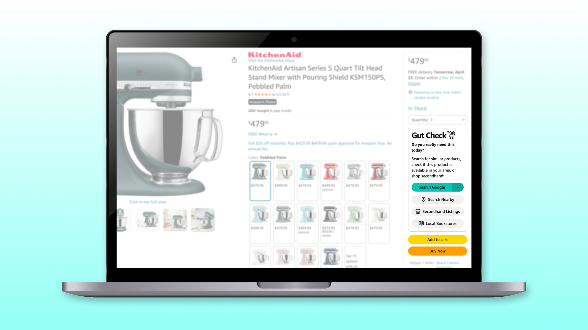

Michael French .co
Typography& interaction

Project 01: Manuscript
This project explores the timeline of typographic evolution from the 1800s through the late 1900s, using text excerpts from Ellen Lupton’s Thinking With Type. It features a typographic timeline composed of the typefaces cited within the selected chapters. The selections from Lupton are stylistically contrasted with my personal perspective.

Project 02: Spread
This project, a collaboration with Kinza Ghanchi, immerses the reader in the potential user experience challenge they may face as an elder. Using text from Don Norman’s article, I wrote the book on user-friendly design. What I see today horrifies me., we explore the notion that senior-centric design can optimize user experiences for all.

Project 03: Binding
Revisiting Thinking With Type by Ellen Lupton, this project aggregates multiple articles focused on the transition of type from the page to the screen. With addition text excerpts from My Typographies by Paul Elliman and Typeface as Programme by Jürg Lehni, I created a design system to connect the pieces with aesthetics that allude to the grittiness of the hot metal typesetting process.

Project 04: Links
This project explores the concept of style as inner logic rather than an external aesthetic. It is based on a collection of materials curated on Are.na by Soko Mungunsukh, with additional contributions from me. The project uses Are.na as a CMS, packaging the content in the form of a fashion mood board.

Project 05: Functions
GutCheck is a friction layer for Amazon that helps intercept the user's attention at the key moment of decision-making and urges them to consider other options like shopping locally or secondhand (or at the very least it gives the user a moment to reevaluate whether or not they really need the product).